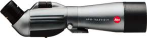
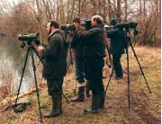

Dutch Birding Association (Nederland tel: 0900/203 21 28): Wat de Wielewaal betekent in België onder vogelaars, betekent DBA in Nederland. Velen zijn wellicht vertrouwd met het voortreffelijk tijdschrift dat deze organisatie uitgeeft. De Website van DBA brengt je geregeld nieuws over bijzonderheden die gesignaleerd werden in het Land. De link-pagina's van DBA zijn zowat de beste die er te vinden zijn. Dutch Birding Association (Nederland tel: 0900/203 21 28): Wat de Wielewaal betekent in België onder vogelaars, betekent DBA in Nederland. Velen zijn wellicht vertrouwd met het voortreffelijk tijdschrift dat deze organisatie uitgeeft. De Website van DBA brengt je geregeld nieuws over bijzonderheden die gesignaleerd werden in het Land. De link-pagina's van DBA zijn zowat de beste die er te vinden zijn.
Het Instituut voor Natuurbehoud: Het Instituut voor Natuurbehoud organiseert en coördineert het prestigieuze Atlasproject dat in 2003 voltooid zal zijn. De site groepeert momenteel reeds de eerste voorlopige resultaten van het onderzoek. Zeker een bezoekje waard dus voor wie eens wil weten of - laat ons zeggen - de roodborsttapuit nog in zijn regio broedt. De site wordt regelmatig geüpdated en er valt zelfs af en toe een exemplaar van de atlas te winnen!
Vogelwerkgroep Zuid-West Vlaanderen: Eén van de werkgroepen binnen de Zuid-West-Vlaamse Natuur- en Milieukoepel en Natuurpunt. Befaamd van de najaarstrekvoorspelling en het forum. Je kan een mailtje sturen naar Yann Feryn als je dagelijks een trek'bulletin' in je e-mailbus wil ontvangen.
Natuurpunt Schelde-Leie: De Oost-Vlaamse Natuurpunt afdeling van regio Schelde-Leie zit niet stil. En dat merk je aan deze site! Vrijwel elke dag (!) kan je de nieuwe waarnemingen uit de streek bekijken, en dat is zowat een unicum tegenwoordig op het Net. Webmaster Ivan Steenkiste kost het dan ook bloed, zweet en tranen, maar stilaan begint hij de vruchten van zijn titanenarbeid te plukken. Met meer dan 50 (vaste) bezoekers per dag scheert deze lokale site hoge toppen. Je kan je ook inschrijven op de mailinglist van deze afdeling!
|

Foto: Leica APO Televid 77
|
|
Natuurpunt Leuven: Natuurstudiegroep Dijleland, de actieve kern van De Wielewaal afdeling Leuven, heeft een erg mooie webstek. Op hun site vind je natuurlijk de recentste waarnemingen maar ook meer info over hun lopende projecten en wat algemeen natuurnieuws uit het Dijleland. Dat allemaal in een aantrekkelijk jasje! |
Sovon: Welke vogels komen voor in Nederland, hoeveel zijn het er en waar zitten ze? Gaan ze voor- of achteruit en waarom? Om daar antwoord op te krijgen organiseert Sovon landelijke vogeltellingen.
De antwoorden zijn van groot belang omdat ze als basis dienen voor toekomstig beleid op het gebied van vogel- & natuurbescherming en terrein- & milieubeheer.
Observatiehutten in Nederland: Een eizona exhaustieve lijst van vogelkijkhutten in Nederland. Over sommige kijkhutten kan je extra informatie aanvragen. De lijst is samengesteld uit de gegevens van Staatsbosbeheer en Natuurmonumenten Nederland.
 |
|
Vogels in het Lauwersmeer: Rommert Cazemier brengt vaak bezoekjes aan het Lauwersmeer. Als lid van the Dutch Birding Association is hij in het bezit van een 'beeper' waarmee hij steeds de laatste en heetste waarnemingen doorgestuurd krijgt. Alles komt ook meteen op de website, die dan ook bijna dagelijks geüpdated wordt. Er is ook een uitgebreide index met mooie foto's en een waslijst leuke vogelverhalen. De moeite!
|
| Foto: Natuurstudiegroep Dijleland |
Avifauna Groningen: Avifauna Groningen is de vereniging voor vogelstudie en vogelbescherming in de provincie Groningen. Ze heeft iedereen met belangstelling voor vogels, van beginner tot ervaren vogelaar, iets te bieden. Ook worden hier dagelijks de Waarnemingen gemeld uit de provincie Groningen.
KNNV Afdeling Voorne: De KNNV afdeling Voorne is met betrekking tot tellingen actief op het eiland Voorne. Op deze website vindt je de mooiste plekjes in deze gebieden, waarneming lijsten, excursie overzicht en verslagen.
De Steltkluut: De Steltkluut is actief in Oost Zeeuwsch-Vlaanderen. De waarnemingen worden geregeld vernieuwd.
Vogelwerkgroep Het Gooi en Omstreken: Zo'n beetje de oudste vogelwerkgroep in Nederland, met een zeer actief waarnemingsbestand. De site behandelt waarnemingen uit het Gooi, de Vechtstsreek en het Eemland, waaronder de zeer beroemde Naardense Bovenmeent bij het Naardermeer, de Keverdijkse polder en die van Arkenheem.
Telpost Parnassia: Trektellen is al sinds 1952 een activiteit van de VWG Zuid-Kennemerland. Deze pagina's geven een beeld van hetgeen zich afspeelt in de zeereep van de Kennemerduinen. Speciale aandacht voor geluiden van trekvogels.
Vogelwerkgroep Zuid-Kennemerland: Vogelonderzoek en vogels kijken in Zuid-Kennemerland. Veel informatie over lopend onderzoek, informatie over 17 bekende vogelkijkpunten (zoals de Zuidpier van IJmuiden, de AWD en de polders ten oosten van Haarlem), het wekelijks overzicht van de belangrijkste waarnemingen, natuurbescherming en veel meer.
Vogelwerkgroep Walcheren: Vogels kijken op het eiland Walcheren (Zeeland) en omstreken. Met recente waarnemingen, foto's, alle tellingen van de landtrektelposten Breskens en de Nolle en zeetrektelpost Westkapelle enz.
Vogelwerkgroep Vlietland: De Vogelwerkgroep Vlietland bestudeert de vogelpopulatie van Vlietland en de Vogelplas Starrevaart, een vogelrijk zoetwatermoeras bij Leidschendam, Zuid-Holland. De website bevat verslagen, persberichten en natuurlijk recente waarnemingen.
|